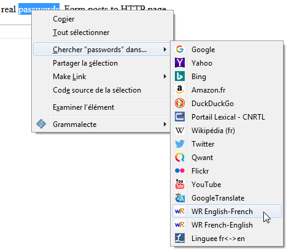
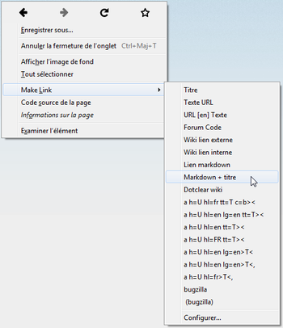
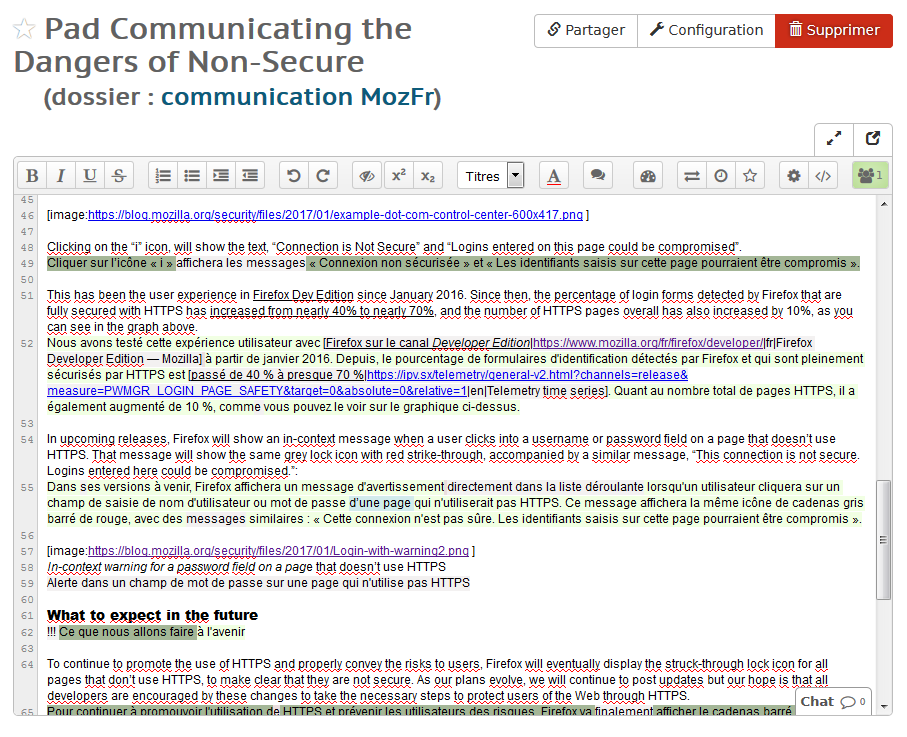
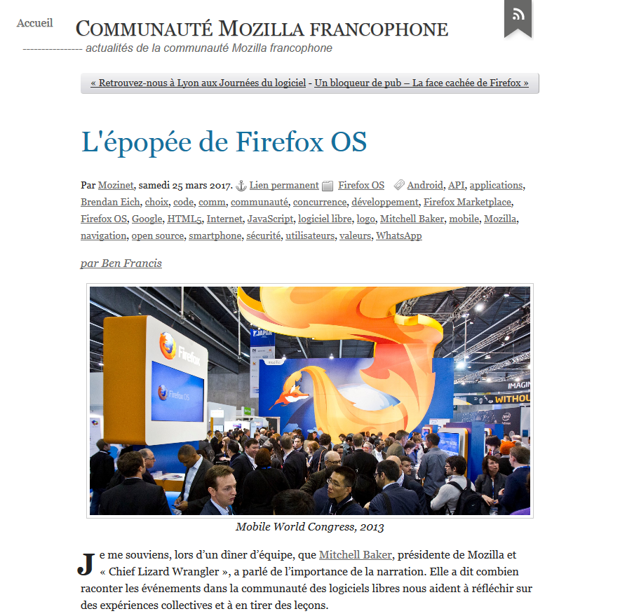
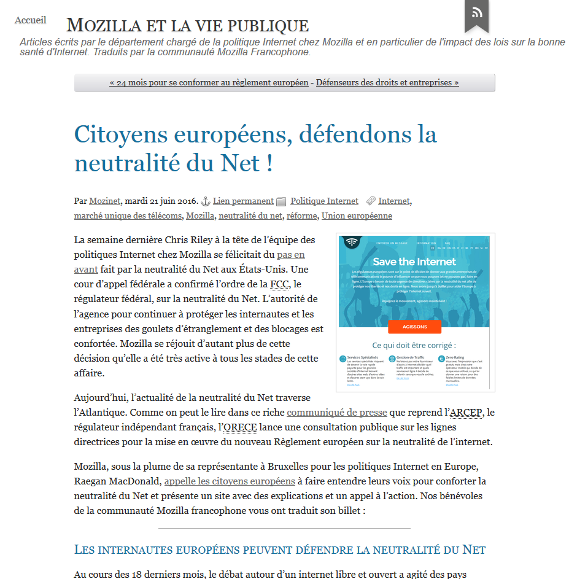
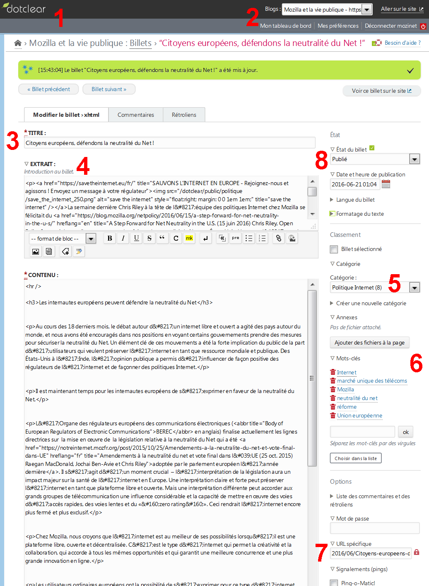
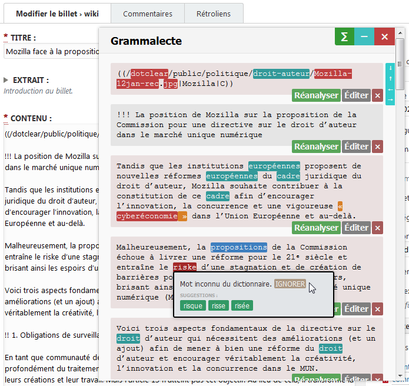
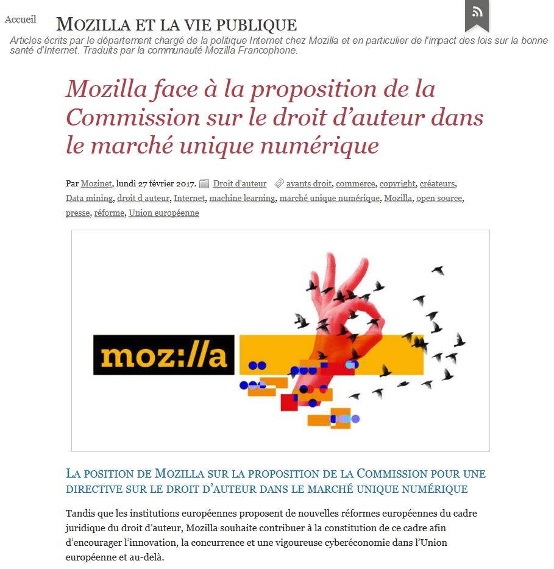
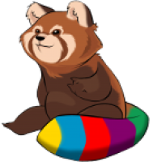

<!DOCTYPE html>
<html>
  <head>
    <meta content="text/html; charset=utf-8" http-equiv="content-type">
    <meta name="viewport" content="width=device-width, initial-scale=1.0, maximum-scale=1.0, user-scalable=no">
    <title>Présentation modèle MozFr</title>
    <link rel="stylesheet" href="css/reveal.css">
    <link rel="stylesheet" href="css/theme/mozilla.css">
    <!-- Theme used for syntax highlighting of code -->
    <link rel="stylesheet" href="lib/css/zenburn.css">
    <!-- Printing and PDF exports -->
    <script>
		var link = document.createElement( 'link' );
		link.rel = 'stylesheet';
		link.type = 'text/css';
		link.href = window.location.search.match( /print-pdf/gi ) ? 'css/print/pdf.css' : 'css/print/paper.css';
		document.getElementsByTagName( 'head' )[0].appendChild( link );
	</script>
  </head>
  <body>
    <div class="reveal">
      <div class="slides">
        <section data-markdown="">
          <script type="text/template">
            

            # Mozilla francophone
            ## Communication
            ### Localisation (l10n)

            <br>
            Locasprint 5 à Mozilla Paris **#l10nParis**<br>
            <small>[bit.ly/l10nparis](https://bit.ly/l10nparis)</small><br>
            <small>8 et 9 avril 2017</small>
          
				</script> </section>
        <section data-markdown="">
          <script type="text/template">
            
            # Mozinet (Pierre)
            **Référent communication** de Mozilla fr
            
            <small>mozinet@mozfr.org</small>
            
            **Mozillien** depuis 14 ans 
            
            <small>[https://mozillians.org/u/Mozinet/](https://mozillians.org/u/Mozinet/)</small>
				</script> </section>
        <section data-markdown="">
          <script type="text/template">
            <br><small>**Indépendant** de la communauté francophone</small>
            
            <small>Webzine historique indépendant depuis 1999<br>https://mozillazine-fr.org/</small>
            
            <small>[@MozillaZineFr](https://twitter.com/MozillaZineFr) depuis juin 2010<br>pour toute l'actualité du projet Mozilla en français<br></small>
				</script> </section>
        <section data-markdown="">
          <script type="text/template">
            
            # Blogzinet
            <small>http://blogzinet.free.fr/blog/</small>
            <br><small>*des milliers d'articles sur Mozilla : traductions, nouveautés, extensions…*</small><br>
            <small>Blog ou [@Mozinet](https://twitter.com/Mozinet) des espaces de contraintes minimum</small>

            Tout ça pour en arriver à…
				</script> </section>
        <section data-markdown="">
          <script type="text/template">
            # Communication ≠ documentation
          
            <small>La documentation vise à fournir des modes d'emploi et tutoriels pour les produits ou langages dans le péimètre de Mozilla (neutralité du ton et systématisme).</small>
            
            MDN, SUMO, blog et comptes techniques
            
				</script> </section>
        <section data-markdown="">
          <script type="text/template">
            # Communication
        
            Transmettre une information selon des moyens et des techniques pour diffuser un message auprès d'une audience.
            
            Pour une communication cohérente, il lui faut une organisation, même légère.

				</script> </section>
        <section data-markdown="">
          <script type="text/template">
            # Qui ?
				</script> </section>
        <section data-markdown="">
          <script type="text/template">
            
            
            # MoCo / MoFo

            * Blogs
            * Réseaux sociaux
            * Campagnes
            * Événements

				</script> </section>
        <section data-markdown="">
          <script type="text/template">
            
            
            # Mozilla francophone

            * Blogs
            * Réseaux sociaux
            * Événements
            
            <small>([Facebook](https://www.facebook.com/frmozilla/ "Mozilla francophone sur Facebook"), [@mozilla_fr](https://twitter.com/mozilla_fr "Mozilla francophone (@mozilla_fr) sur Twitter"), [@firefox_fr](https://twitter.com/firefox_fr "Firefox en français (@firefox_FR) sur Twitter"), [YouTube](https://www.youtube.com/channel/UCyieisb28vyXaltYRFsHDaQ "Mozilla francophone sur YouTube"))</small>

				</script> </section>
        <section data-markdown="">
          <script type="text/template">
            
            
            Dans ce cadre, la localisation dans la communication communautaire…
            
				</script> </section>

        <section data-markdown="">
          <script type="text/template">
            # Repérage
            
            Cela peut venir des vos **canaux personnels** ou :
            * de [Twitter](https://twitter.com/following "Personnes suivies par MozillaZine-fr.org (@MozillaZineFr) sur Twitter") ([mes listes](https://twitter.com/MozillaZineFr/lists "Listes de MozillaZine-fr.org (@MozillaZineFr) sur Twitter"))
            * du [blog de Mozilla](https://blog.mozilla.org/ "The Mozilla Blog - Dispatches from the Internet frontier") <small>(vérifiez s'il n'y a pas une traduction confiée à [une agence](https://blog.mozilla.org/press-fr/ "Section Presse Mozilla – Actualités et annonces Mozilla"))</small>
            * de [Planet Mozilla](https://planet.mozilla.org/ "Planet Mozilla") pour les blogs de projets, des contributeurs et des employés
            * …
				</script> </section>
        <section data-markdown="">
          <script type="text/template">
            # Responsable
            
            Généralement, celui qui lance une traduction en prend tacitement la responsabilité.
            
            On peut chercher un·e Mozillien·ne pour coordonner le travail.
            
            Lancer une traduction n'oblige pas à faire le principal soi-même.
            
				</script> </section>
        <section data-markdown="">
          <script type="text/template">
            # Autorisation
            
            Licence libre (ex. [Creative Commons](https://fr.wikipedia.org/wiki/Licence_Creative_Commons "Licence Creative Commons — Wikipédia")) ou autorisation expresse
            
            On peut chercher un·e Mozillien·ne pour coordonner le travail.
            
            Lancer une traduction n'oblige pas à faire le principal soi-même.
            
				</script> </section>
        <section data-markdown="">
          <script type="text/template">
            # Traduction / outils 1
            
            Moteurs de recherche Firefox :
            * [Wordreference](http://mycroftproject.com/search-engines.html?name=wordreference "Mycroft Project: Wordreference Search Engine Plugins - Firefox IE Chrome") (en => fr)
            * [Linguee](http://mycroftproject.com/search-engines.html?name=linguee "Mycroft Project: Linguee Search Engine Plugins - Firefox IE Chrome") (fr => en)
            * d'autres sur [AMO](https://addons.mozilla.org/fr/firefox/search-tools/dictionaries-encyclopedias "Dictionnaires et encyclopédies – Outils de recherche – Modules pour Firefox") et [Mycroft](http://mycroftproject.com/ "Mycroft Project: Search Engine Plugins - Firefox IE Chrome")
            * [ajouter des moteurs de recherche](https://support.mozilla.org/t5/Manage-preferences-and-add-ons/Ajouter-ou-supprimer-un-moteur-de-recherche-dans-Firefox/ta-p/39480 "Ajouter ou supprimer un moteur de recherche dans Firefox - Mozilla Support Community") dans Firefox            
				</script> </section>
        <section data-markdown="">
          <script type="text/template">
            # Traduction / outils 2
            
            Extensions Firefox ([tuto](https://support.mozilla.org/t5/Manage-preferences-and-add-ons/Utiliser-les-extensions-pour-ajouter-des-fonctionnalit%C3%A9s-%C3%A0/ta-p/17868 "Utiliser les extensions pour ajouter des fonctionnalités à Firefox  - Mozilla Support Community")) :
            * [Context Search](http://blogzinet.free.fr/blog/index.php?post/2013/10/13/Context-Search-%3A-un-perfectionnement-bienvenu-et-traduction-en-francais "Context Search : un perfectionnement bienvenu et traduction en français (MÀJ) (13 oct. 2013) BlogZiNet") ([AMO](https://addons.mozilla.org/fr/firefox/addon/context-search/ "Context Search – Module pour Firefox de Ben Basson"))
            * [Make Link](http://blogzinet.free.fr/blog/index.php?post/2010/05/14/Make-Link-%3A-copier-l-URL-et-le-titre-d-une-page-dans-le-presse-papiers "Make Link : copier l'URL et le titre d'une page dans le presse-papiers - extension pour Mozilla Firefox (14 mai 2010) BlogZiNet") ([AMO](https://addons.mozilla.org/fr/firefox/addon/make-link/ "Make Link – Module pour Firefox de Rory Parle"))<br><small>pour formater les liens (formats forums, wiki, HTML…)<br>voir aussi [FireLink](https://blog.mozfr.org/post/2016/12/Copie-mise-en-forme-des-liens-Calendrier-Avent-Jour-5 "Copie et mise en forme des liens – Calendrier de l’Avent - Jour 5 (5 déc. 2016) Communauté Mozilla francophone") ([AMO](https://addons.mozilla.org/fr/firefox/addon/firelink/ "FireLink - Copy link with keyboard shortcuts – Module pour Firefox d'ongaeshi"))</small>
            
             
				</script> </section>
        <section data-markdown="">
          <script type="text/template">
            # Pad
            <small>[Etherpad Lite](https://fr.wikipedia.org/wiki/Etherpad#Etherpad_Lite "Etherpad : Etherpad Lite — Wikipédia") : [Mozilla (public)](https://public.etherpad-mozilla.org/ "Etherpad") ou [MyPads](https://mypads.framapad.org/mypads/?/login "MyPads") de [Framasoft](https://framasoft.org/ "Framasoft ~ Page portail du réseau")</small><br>
            
            
				</script> </section>
        <section data-markdown="">
          <script type="text/template">
          # Lancement
          * [*Issue* Besogne GitHub](https://github.com/mozfr/besogne/issues "Issues · mozfr/besogne") (+ *label*)
          * [Canal IRC](https://github.com/mozfr/besogne/wiki/IRC "IRC · mozfr/besogne Wiki") #mozfr
          * Courriel à la [liste de diffusion](https://www.mozfr.org/liste)
				</script> </section>
        <section data-markdown="">
          <script type="text/template">
          # Relecture
          Ameuter :
          * Relecteurs habituels
          * Spécialistes de la langue
          * Techniciens du domaine
          
          Décision du responsable : arrêt des contributions            
				</script> </section>
        <section data-markdown="">
          <script type="text/template">
          # Mise en forme
          
          Trancher entre les propositions
          
          Inclure le code (HTML, Markdown, wiki…) :
          * mise en page
          * liens
          * images
          * vidéos
				</script> </section>
        <section data-markdown="">
          <script type="text/template">
          # Contexte de la traduction
          
          Décider si une introduction et des notes du traducteur sont nécessaires.
          
          Ajouter le nom des traducteur·rice·s et des relecteur·rice·s (+ liens).
          
          Et donc, soit…            
				</script> </section>
        <section data-markdown="">
          <script type="text/template">
          <small>… [on a juste](https://blog.mozfr.org/post/2017/03/epopee-Firefox-OS "L'épopée de Firefox OS (25 mars 2017) Communauté Mozilla francophone") l'ajout d'un « par » suivi du **nom de l'auteur** (avec lien vers la VO), soit…</small>
          
          

            
				</script> </section>
        <section data-markdown="">
          <script type="text/template">
          <small>… [on a plusieurs paragraphes](https://notreinternet.mozfr.org/post/2016/06/Citoyens-europeens-defendons-neutralite-du-Net "Citoyens européens, défendons la neutralité du Net ! (21 juin 2016) Mozilla et la vie publique") d'introduction et<br>ajout d'un nouveau titre et d'une illustration</small>
          
          
				</script> </section>
        <section data-markdown="">
          <script type="text/template">
          # Blog
          
          
				</script> </section>
        <section data-markdown="">
          <script type="text/template">
          # Correcteur grammatical
          
          ⚠️ Important<br>
		  <small>[Grammalecte](https://addons.mozilla.org/fr/firefox/addon/grammalecte-fr/ "Grammalecte fr – Module pour Firefox de dicolecte")</small>
          
          
				</script> </section>
        <section data-markdown="">
          <script type="text/template">
          # Publier ou programmer
				</script> </section>
        <section data-markdown="">
          <script type="text/template">
          # Étape finale et communication
          
          * Remerciements
          * Mention dans les canaux de travail
          * Annonce sur les réseaux sociaux
          
          <small>Cette dernière étape de communication n'est pas forcément<br>l'œuvre du responsable de la traduction.</small>
				</script> </section>
        <section data-markdown="">
          <script type="text/template">
          # Et voilà !

          
				</script> </section>
        <section data-markdown="">
          <script type="text/template">
          # Des questions ?
				</script> </section>
      </div>
    </div>
    
    <script src="lib/js/head.min.js"></script>
    <script src="js/reveal.js"></script>
    <script>
			// More info https://github.com/hakimel/reveal.js#configuration
			Reveal.initialize({
				history: true,
				slidenumber: true,
				center: true,

				// More info https://github.com/hakimel/reveal.js#dependencies
				dependencies: [
				{ src: 'plugin/markdown/marked.js' },
				{ src: 'plugin/markdown/markdown.js' },
				{ src: 'plugin/notes/notes.js', async: true },
				{ src: 'plugin/highlight/highlight.js', async: true, callback: function() { hljs.initHighlightingOnLoad(); } }
				]
			});
		</script>
    <style type="text/css">
    /* 1. Style header/footer <div> so they are positioned as desired. */
    #header-left {
        position: absolute;
        top: 5%;
        left: 5%;
        font-size: 0.5em;
    }
    #header-right {
        position: absolute;
        top: 5%;
        right: 5%;
        font-size: 0.5em;
    }
    #footer-left {
        position: absolute;
        bottom: 5%;
        left: 5%;
        font-size: 0.5em;
    }
</style><!-- 2. Create hidden header/footer <div> -->
    <div id="hidden" style="display:none;">
      <div id="header">
        <div id="footer-left">Communauté
          Mozilla francophone – CC-By-SA 4.0+</div>
      </div>
    </div>
    <script src="https://code.jquery.com/jquery-2.2.4.min.js"></script>
    <script type="text/javascript">
    // 3. On Reveal.js ready event, copy header/footer <div> into each `.slide-background` <div>
    var header = $('#header').html();
    if ( window.location.search.match( /print-pdf/gi ) ) {
        Reveal.addEventListener( 'ready', function( event ) {
            $('.slide-background').append(header);
        });
    }
    else {
        $('div.reveal').append(header);
   }
</script>
  </body>
</html>
